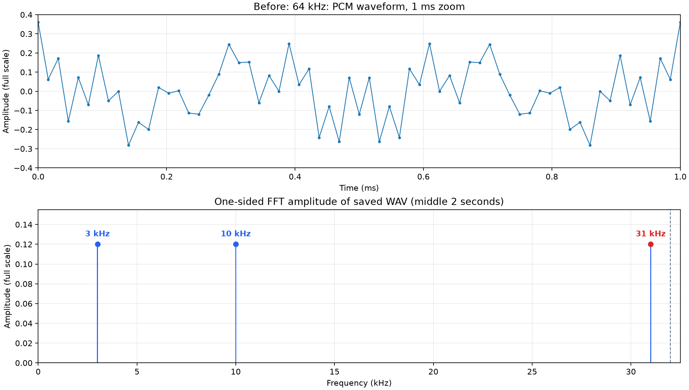
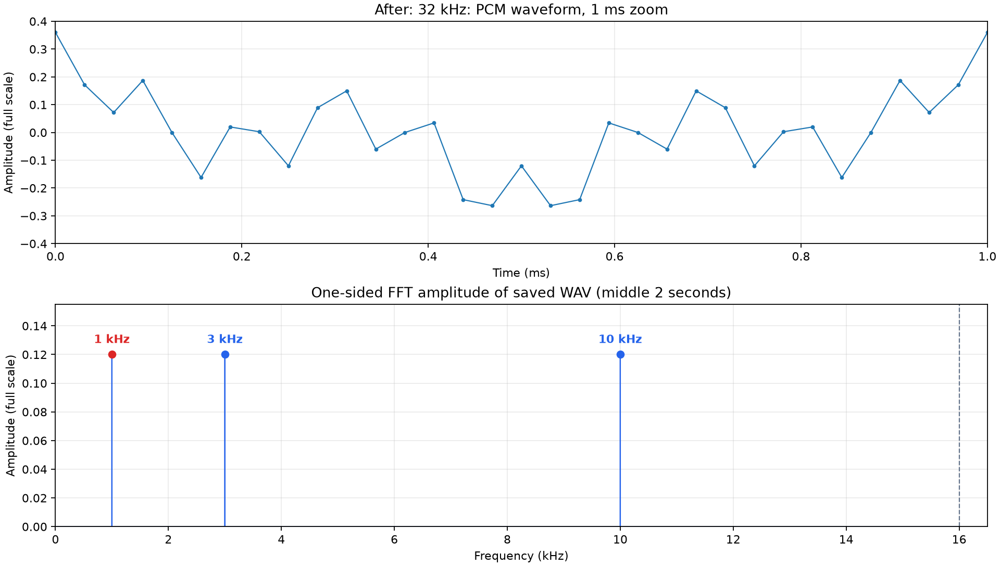

Keep every other sample. Replay at half the sample rate. Hear a new tone.
A synthetic 4-second, mono PCM16 recording contains 3, 10 and 31 kHz tones,
each at 0.12 full-scale amplitude. The experiment applies x[::2]
without an anti-alias filter, then saves the result at 32 kHz.
Start with low playback volume. Both files have the same duration and amplitude scale.
FFT peaks: 3, 10 and 31 kHz.

FFT peaks: 1 kHz, 3 and 10 kHz. The original 31 kHz tone exceeds the new 16 kHz Nyquist limit and aliases to |31 − 32| = 1 kHz.

Samples can arrive without bit errors and still represent the wrong frequency after firmware discards data. To reduce a 64 kHz PCM stream to 32 kHz, attenuate frequencies above the new Nyquist limit before keeping alternate samples. This experiment intentionally omits that filter.
FFT amplitudes are calculated from the saved WAV files, using their middle 2 seconds. The waveform is a 1 ms view with sample markers; connecting lines are a visual aid.
Browser/OS playback may resample audio, and ordinary speakers cannot reproduce 31 kHz faithfully. The WAV and FFT establish its presence; listen for the new 1 kHz component in the second recording.